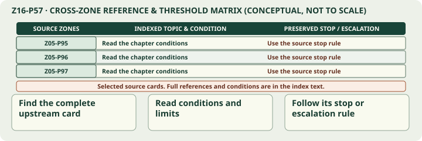

Z16-P57 · Field reference atlas · New manuscript
Macrofungi Separate Schema: Spore Prints, Cutaways and Host Trees Index
Cross-reference Z05 dedicated mycological workflow (`Z05-P95`–`P115`) keeping fungal anatomy, spore prints, cutaways, and substrate hosts separate from plants.
When it applies · All macrofungi observation and voucher documentation in Minnesota.
Equipment · Full offline reader (Z05), primary zone cards, and local emergency and agency references.

Actions
- Require every fungal profile to verify cap, fertile surface (gills, pores, teeth, smooth) and attachment, stipe, ring, excavated intact basal volva, bulb, dual black, white spore print, and exact substrate, host tree (Z05-P95, Z05-P96).[A05, B05]
- Enforce mandatory lengthwise cutaways on puffballs (100% pure-white core vs hidden lethal Amanita egg silhouette or dark earthball, Z05-P105) and true morels (100% continuous hollow vs chambered Gyromitra, Z05-P98) alongside hardwood-only host checks (oyster vs conifer angel wing, chicken of the woods, Z05-P99, Z05-P103).[A05, B05, B06, B08]
- Reject sealed plastic bags (rapid bacterial spoilage), reject raw wild mushrooms, reject red-pored, blue-staining boletes and conifer-host Laetiporus, and preserve permanent WITHHELD_HOLD pending qualified mycologist review (Z05-P97, Z05-P109, Z05-P114, Z05-P115).[A05, B05, B08, B24]
Failure recognition · Skipping base excavation, spore prints, or vertical bisection directly causes fatal Amanita and Galerina misidentifications.[B05, B06, B07]
Verify · Separate fungal schema, mandatory cutaways, spore prints, paper-bag handling, and WITHHELD_HOLD stay intact.[B05, B24]
Stop or change course · Stop fungal identification on immature buttons, cut-off stems missing bases, decayed caps, or ambiguous spore prints.[B05, B24]
Evidence and editorial notes
- A05 · Bell Museum (UMN) · Minnesota Biodiversity Atlas (Current web edition)
- Section: Botanical and fungal cross-reference with permanent consumption HOLD · Conditions: Indexing Z05 species morphology, lookalikes, and Poison Control referrals
Support: Atlas botanical/fungal tables index accepted names, phenology, and lethal lookalikes solely for observation, hazard avoidance, and voucher documentation.
Limitations: No Z16 index entry may imply edibility or bypass Z05 multi-character and expert-review gates. · Conflicting evidence: None noted.
Editorial note: Preserves Z05 consumption HOLD inside Z16. · Specialist reviewer: Botanist and mycologist
Primary source · checked 2026-11-25 - B05 · MyCoPortal · North American Fungal Voucher Collections Portal (Current web edition)
- Section: Separate fungal voucher collections and microscopic/macro traits · Conditions: Documenting macrofungi across North American collections
Support: Fungal taxonomy requires distinct anatomical schemas (cap, gills/pores/teeth, attachment, ring, volva, spore print, substrate, and often microscopy).
Limitations: Fungal species complexes frequently overlap macroscopically; photos alone cannot confirm edibility. · Conflicting evidence: None noted.
Editorial note: Keeps botanical and fungal schemas separate. · Specialist reviewer: Qualified mycologist
Primary source · checked 2026-11-25 - B06 · CDC MMWR · Notes from the Field: Severe Mushroom Poisoning — Minnesota 2018 (MMWR 68(21))
- Section: Minnesota severe mushroom poisoning outbreak (MMWR 68:21) · Conditions: Wild mushroom foraging and lookalike misidentification in Minnesota
Support: Foragers in Minnesota suffered severe hepatotoxic poisoning after mistaking lethal amatoxin-containing mushrooms for familiar edible species.
Limitations: Delayed gastrointestinal onset (6-24+ hours) followed by a false recovery phase precedes liver failure; treat any wild mushroom ingestion with symptoms as a medical emergency. · Conflicting evidence: None noted.
Editorial note: Critical Minnesota fungal hazard evidence. · Specialist reviewer: Medical toxicologist and mycologist
Primary source · checked 2026-11-25 - B07 · CDC MMWR · Amanita phalloides Mushroom Poisonings — 2026 Outbreak Report (MMWR 75(20))
- Section: Amanita phalloides outbreak and amatoxin lethality (MMWR 75:20) · Conditions: Recognizing lethal Amanita lookalike risk and cooking myths
Support: Amatoxins in death cap and destroying angel species survive boiling, freezing, and drying; misidentification causes acute liver failure and death.
Limitations: Never rely on folklore tests, boiling, peeling, or visual similarity to safe regional species. · Conflicting evidence: None noted.
Editorial note: Prohibits boiling/peeling mushroom myths. · Specialist reviewer: Medical toxicologist and mycologist
Primary source · checked 2026-11-25 - B08 · North American Mycological Association · Mushroom Poisoning Syndromes Reference (Current web edition)
- Section: Mushroom poisoning syndrome classes and specimen retention · Conditions: Evaluating suspected wild fungal exposure
Support: Mushroom toxins span distinct syndromes (amatoxins, gyromitrin, orellanine, muscarine, ibotenic acid, GI irritants) with onset from minutes to days.
Limitations: Save remaining uneaten mushroom pieces in a paper bag (not sealed plastic) for mycologist identification if exposure occurs, and call Poison Control immediately. · Conflicting evidence: None noted.
Editorial note: Grounds Z05 fungal toxicology & emergency referral. · Specialist reviewer: Mycology toxicology reviewer
Primary source · checked 2026-11-25 - B24 · CDC MMWR · Notes from the Field: Severe Mushroom Poisoning — Minnesota 2018 (MMWR 68(21))
- Section: Rejection of folklore edibility tests and AI-only visual clearance · Conditions: All wild plant, berry, root, and fungal screening
Support: Universal skin/lip rub tests, silver-spoon tests, animal-browsing observations, single photos, and generated illustrations never establish edibility.
Limitations: If any diagnostic feature, site-contamination history, or expert review is missing, consumption remains strictly WITHHELD. · Conflicting evidence: None noted.
Editorial note: Enforces Z05 fail-closed edibility rule. · Specialist reviewer: Botanist, mycologist, and clinical toxicologist
Primary source · checked 2026-11-25
Source lineage · New manuscript (Z16 P20 mycology index) · Classification · New manuscript.